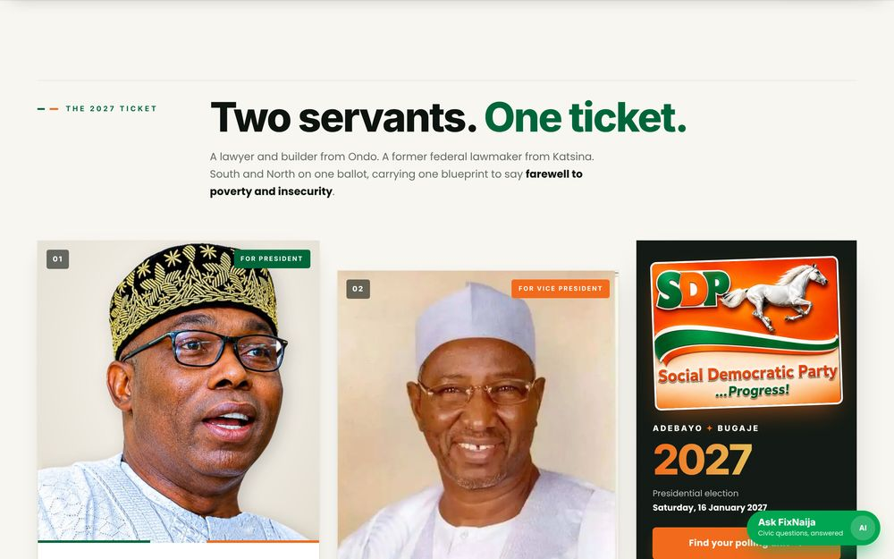
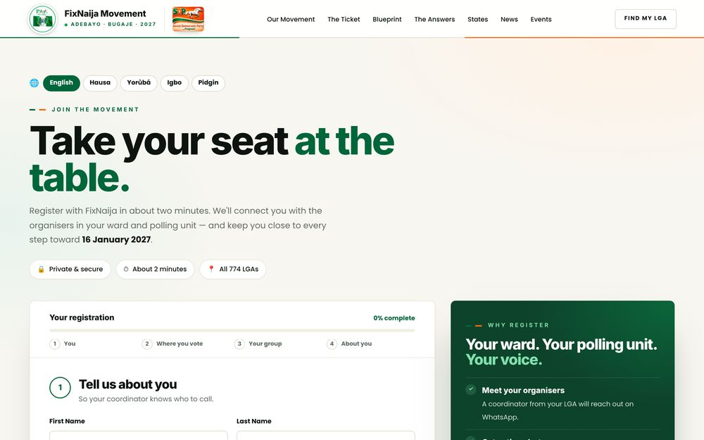
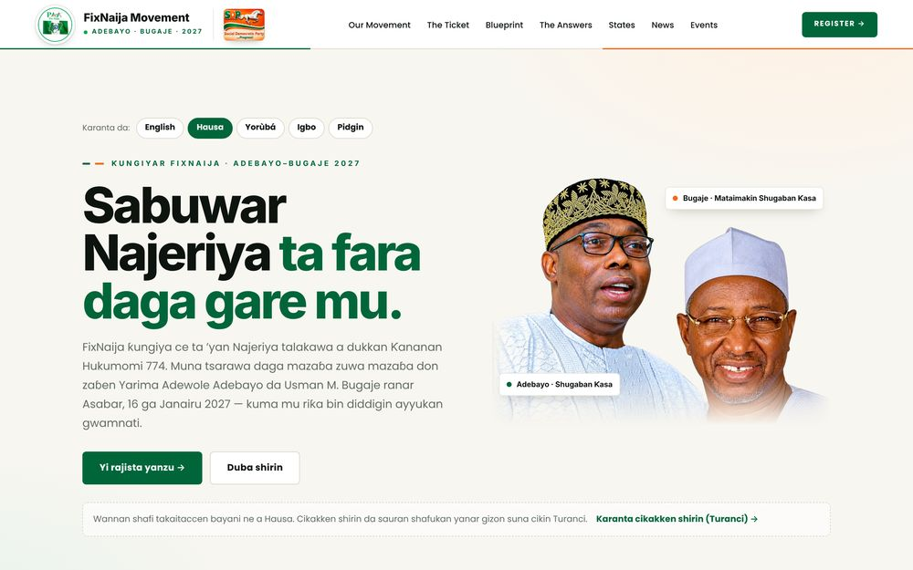
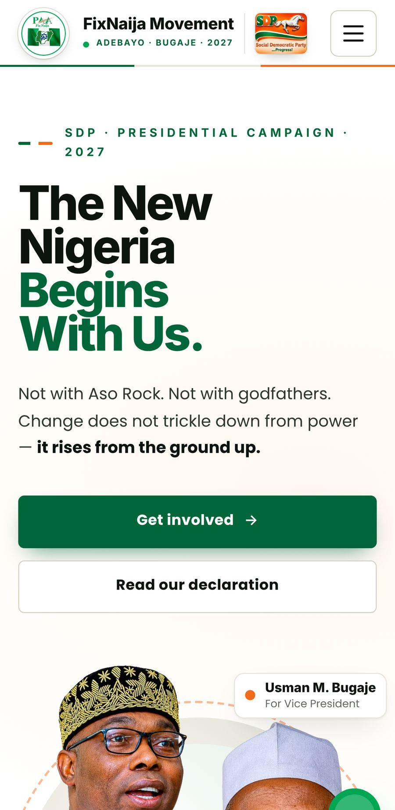

Project 001 — Digital experience, 2026
FixNaija Movement.
A campaign website for a grassroots movement organised around Nigeria’s 774 local government areas, with an interactive state map, pages in Hausa, Yoruba, Igbo and Pidgin, and a Supabase back end for ward-level data.
- Client
- FixNaija Movement
- Year
- 2026
- Discipline
- Digital experience
- My role
- Website design and build, back end and data structure, WhatsApp group network, campaign media
- Live site
- fixnaijamovement.com.ng ↗

The brief
The movement is organised from the ground up, ward by ward, across all 774 local government areas. Supporters needed one place to find their own area, read the message in a language they speak, and register where they live.
The direction
Let the map do the navigating: visitors find their own state, then their local government and ward. The campaign headline and candidates lead the page, and four language versions keep the message close to home.
How it was made
The site is a static build on Vercel with a Supabase back end. Registration narrows from state to local government to ward to polling unit, using real INEC names. An admin dashboard serves the campaign team, and ward-level WhatsApp groups connect supporters on the ground.
Where it stands
Live at fixnaijamovement.com.ng.
The work





Want something
like this?
Send the idea, the deadline and the budget you have in mind. You get a direct reply and a written quote.
+234 703 993 4163WhatsApp and calls · Hali Plaza, Kwata, Suleja